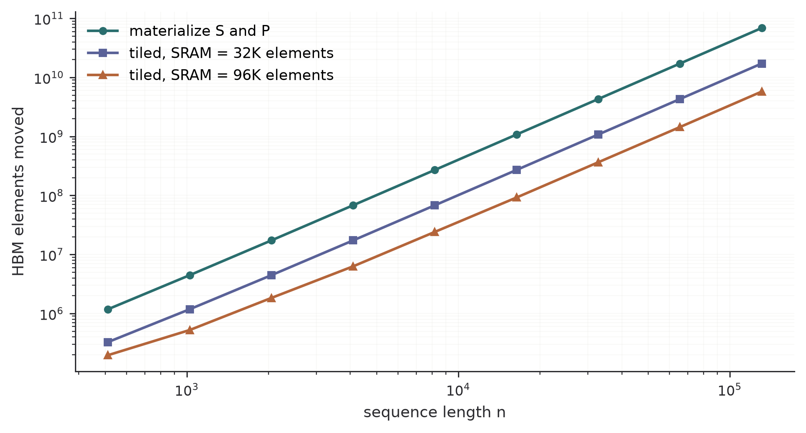

How tiled online softmax computes exact attention without materializing the quadratic score matrix in GPU memory.
Author
Diego Filippo Marino
Published
August 13, 2026
The standard account of attention starts with an n\times n matrix. That is mathematically convenient and computationally misleading. A GPU does not pay only for arithmetic. It also pays to move every intermediate between high-bandwidth memory, caches, registers, and on-chip SRAM.
FlashAttention keeps the exact attention function but changes its evaluation schedule so the quadratic score and probability matrices are never written to high-bandwidth memory (Dao et al. 2022). The central technique is an online softmax that can be updated one tile at a time.
A conventional sequence of kernels writes S to HBM, reads it for softmax, writes P, then reads P for the second matrix multiplication. Counting the elements that cross the HBM boundary for one head:
Table 1: HBM elements moved by an unfused three-kernel schedule.
Stage
Reads
Writes
S=QK^\top
Q,K: 2nd
S: n^2
P=\operatorname{softmax}(S)
S: n^2
P: n^2
O=PV
P,V: n^2+nd
O: nd
The total is 4n^2+4nd elements, of which the quadratic part dominates as soon as n\gg d. Fusing softmax into one of the matrix multiplications removes a round trip and reduces the constant, but it does not change the order: any schedule that materializes S or P pays \Omega(n^2) traffic.
The absolute numbers make the constraint concrete. At n=16{,}384 and FP16, one score matrix for a single head of a single batch element occupies 512 MiB. The corresponding Q, K, and V at d=128 occupy about 12 MiB combined. The intermediate is roughly forty times the size of the operands that produced it, and it exists only to be consumed by the next kernel. Meanwhile on-chip SRAM is measured in hundreds of kilobytes per streaming multiprocessor, so no tiling of the stored matrix helps; the matrix must not exist.
That reframing is the whole algorithm. Attention is not expensive because of n^2 arithmetic alone. It is expensive because the standard schedule promotes a scratch value to a first-class tensor.
Softmax can be streamed exactly
For a row of logits x_1,\ldots,x_j, maintain the running maximum and exponential sum
Equations Equation 1 and Equation 2 are exact apart from floating-point rounding. They let a kernel load a query tile, stream over key and value tiles, and retain only row statistics and a partial output on chip.
The exactness claim deserves a test rather than a citation, because it is the property that separates FlashAttention from an approximation. The critical case is a late arrival: a logit larger than everything seen so far shows up in the final tile, forcing every accumulated term to be rescaled after the fact.
import numpy as npdef reference_attention(q, k, v):"""One-shot softmax over the full key set.""" logits = k @ q * q.shape[-1] **-0.5 p = np.exp(logits - logits.max())return (p / p.sum()) @ vdef tiled_attention(q, k, v, block=64):"""Online-softmax attention for one query vector. Exact, not fast.""" scale = q.shape[-1] **-0.5 m, ell =-np.inf, 0.0 acc = np.zeros(v.shape[-1], dtype=np.float64)for start inrange(0, len(k), block): kb, vb = k[start:start + block], v[start:start + block] logits = kb @ q * scale new_max =max(m, logits.max()) rescale = np.exp(m - new_max) # correct the past weights = np.exp(logits - new_max) # weight the present acc = rescale * acc + weights @ vb ell = rescale * ell + weights.sum() m = new_maxreturn acc / ellrng = np.random.default_rng(0)n, d =4096, 64q, k, v = rng.normal(size=d), rng.normal(size=(n, d)), rng.normal(size=(n, d))reference = reference_attention(q, k, v)for block in (16, 64, 256, 1024, 4096):assert np.allclose(tiled_attention(q, k, v, block), reference, rtol=0, atol=1e-14)# Worst case for the running maximum: the dominant key is the very last one.k_late = k.copy()k_late[-1] = q *12.0late = np.max(np.abs(tiled_attention(q, k_late, v, 64)- reference_attention(q, k_late, v)))print(f"late-maximum deviation: {late:.2e}")
late-maximum deviation: 0.00e+00
The block size is a scheduling parameter, not a fidelity parameter. Changing it reorders floating-point additions and nothing else, which is why the deviation sits at the rounding floor instead of growing with the number of tiles. Approximate attention methods drop terms; this one keeps every term and only postpones normalizing them.
The Python above exposes the recurrence but provides none of the speedup. Performance comes from mapping tiles to GPU thread blocks and issuing tensor-core matrix multiplications while (m,\ell,\widetilde o) live in registers and the tiles live in SRAM.
Tiling the full matrix
Partition Q into row tiles Q_i and K,V into column tiles K_j,V_j. For each Q_i:
Load Q_i once into on-chip memory.
Stream through (K_j,V_j) pairs.
Compute Q_iK_j^\top as a small tile.
Update each row’s (m,\ell,\widetilde{o}) state.
Write the final O_i and log-sum-exp statistics.
The algorithm still performs dense attention arithmetic. Its gain comes from reducing expensive HBM transactions, and the tile sizes are what convert on-chip capacity into saved traffic.
Suppose SRAM holds M elements. A working set consists of one query tile, one key tile, one value tile, and one output accumulator:
Now count traffic. Q is read once and O is written once, contributing 2nd. Each of the n/B_r query tiles streams the entire key and value tensors, contributing (n/B_r)\cdot 2nd. Substituting Equation 3,
which is the HBM access complexity in the original analysis, over the relevant range of tile sizes (Dao et al. 2022). Comparing Equation 4 against the 4n^2+4nd of Table 1, the asymptotic ratio at large n is M/(2d^2): independent of sequence length, linear in SRAM capacity, and quadratic in head dimension. Larger heads are penalized twice, once for the tiles they force to shrink and once for the bytes each tile carries.
import matplotlib.pyplot as pltdef standard_traffic(n, d):return4* n**2+4* n * ddef tiled_traffic(n, d, sram_elements): tile =max(sram_elements // (4* d), 1) # from the SRAM budget above row_tiles = np.ceil(n / np.minimum(tile, n))return2* n * d + row_tiles *2* n * dlengths =2** np.arange(9, 18)head_dim =64fig, ax = plt.subplots(figsize=(7, 3.8))ax.loglog(lengths, standard_traffic(lengths, head_dim), "o-", label="materialize $S$ and $P$")for sram, style in ((32*1024, "s-"), (96*1024, "^-")): ax.loglog(lengths, tiled_traffic(lengths, head_dim, sram), style, label=f"tiled, SRAM = {sram //1024}K elements")ax.set(xlabel="sequence length $n$", ylabel="HBM elements moved")ax.spines[["top", "right"]].set_visible(False)ax.grid(which="both", alpha=0.18)ax.legend(frameon=False)plt.tight_layout()plt.show()ratio = standard_traffic(2**16, head_dim) / tiled_traffic(2**16, head_dim, 96*1024)print(f"traffic reduction at n=65,536: {ratio:.1f}x (predicted M/2d^2 = "f"{96*1024/ (2* head_dim**2):.1f}x)")

Figure 1: HBM elements moved per head under the two schedules at head dimension 64. Both curves are quadratic in sequence length; tiling divides the quadratic term by the on-chip working set, so the vertical gap is set by SRAM capacity rather than by sequence length.
traffic reduction at n=65,536: 11.9x (predicted M/2d^2 = 12.0x)
The measured ratio matches the closed form, which is the point of the exercise: the speedup is predictable from two hardware numbers and one model number, before any kernel is written. It also shows what tiling does not do. Both curves keep slope two on the log-log axes. The algorithm buys a constant factor on a quadratic, and that constant is bounded by the size of the on-chip scratchpad.
Backward by recomputation
Ordinary autodiff saves S or P because the backward pass needs probabilities. FlashAttention stores only O and the row-wise log-sum-exp
L_i=m_i+\log\ell_i,
\tag{5}
then recomputes score tiles during backward. One scalar per row is sufficient because L_i is exactly the normalizer that was divided out: a recomputed score tile becomes the correct probability tile through P_{ij}=e^{S_{ij}-L_i}, with no second pass over the row and no dependence on tile order.
The accounting is favorable. The saved activation shrinks from n^2 elements to nd+n, a factor of roughly n/d; at n=16{,}384 and d=64 that is a 256-fold reduction in stored state per head. The cost is one extra QK^\top during backward, raising attention FLOPs by about 30 percent rather than doubling them, since the backward pass already performs several matrix multiplications of the same shape.
Standard gradient checkpointing makes the same trade at layer granularity and re-executes whole blocks. Here the choice is made per intermediate, keeping the cheap linear-size statistic and discarding the expensive quadratic one. Recomputation is not a concession; it is what makes the linear memory profile reachable without changing the function being differentiated.
FlashAttention-2 changes the work partition
The first algorithm removed the primary IO bottleneck but reached only 25 to 40 percent of A100 peak throughput. FlashAttention-2 targets utilization (Dao 2023):
It delays output normalization to reduce non-matrix FLOPs.
It parallelizes over sequence tiles in addition to batch and heads, improving occupancy when batch size or head count is small.
It partitions Q across warps while sharing K and V, avoiding the shared-memory reductions induced by splitting K.
The paper reports 50 to 73 percent of theoretical A100 peak and up to 225 TFLOP/s for GPT-style training (Dao 2023). Those numbers depend on model shape and hardware. They are not a universal speed multiplier.
Changing the evaluation order raises arithmetic intensity by doing more useful work per byte transferred from HBM. Once the kernel crosses into the compute-bound regime, further reductions in traffic yield less benefit and work partitioning becomes decisive.
This explains an apparently paradoxical result: an algorithm may execute more arithmetic through recomputation and still finish sooner.
Boundaries
FlashAttention does not make dense attention asymptotically linear in compute. It makes memory usage linear and reduces IO. Dense arithmetic remains quadratic in sequence length. It also does not replace the KV cache during autoregressive decoding. FlashAttention optimizes the attention kernel; KV-cache paging manages persistent state across requests.
That distinction is worth keeping. Similar words such as memory-efficient can refer to activation memory, persistent cache capacity, allocator fragmentation, or bandwidth traffic. These are different constraints with different remedies.
Dao, Tri. 2023. “FlashAttention-2: Faster Attention with Better Parallelism and Work Partitioning.”arXiv Preprint arXiv:2307.08691. https://arxiv.org/abs/2307.08691.
Dao, Tri, Daniel Y. Fu, Stefano Ermon, Atri Rudra, and Christopher Ré. 2022. “FlashAttention: Fast and Memory-Efficient Exact Attention with IO-Awareness.”Advances in Neural Information Processing Systems 35: 16344–59. https://arxiv.org/abs/2205.14135.
Citation
BibTeX citation:
@online{marino2026,
author = {Marino, Diego Filippo},
title = {FlashAttention {Is} an {IO} {Algorithm}},
date = {2026-08-13},
url = {https://diegofilippomarino.github.io/Eigenholm/posts/flashattention-io-aware/},
langid = {en}
}